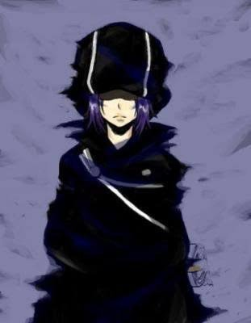

| Mammon (瑪門) |
| バイパー, Baipā |
|  |
| Biographical information |
| Age |
2 |
| Birthday |
July 2 |
| Physical description |
| Gender |
Unknown |
| Height |
40 cm |
| Weight |
3.6 kg |
| Blood type |
A |
| Underground information |
| Flame |
Mist Flame |
| Equipment |
Illusions |
| Box Animal |

Mist Starfish |
Both as an adult and in Arcobaleno form, Viper is shown wearing a black outfit with a hood that covers his eyes, making it hard to know his gender. Before becoming an Arcobaleno, Viper is seen to have chin-length purple-colored hair and fairly white skin. He has two triangular purple markings on his cheek that extend to his jawline when he use their Arcobaleno powers. In his Arcobaleno form, his mouth is shaped like an upside-down V.
.